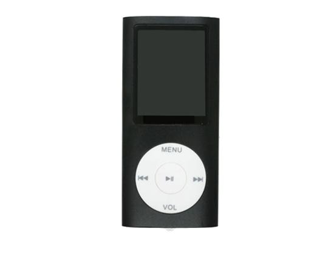

MP3 Mini
MP3 Grande
|
MP3 Mini |

MP3 Grande |
||||
| Capadidad de almacenamiento | 4GB (1.0000 canciones) | 8GB (2.000 canciones) | 16GB (4.000 canciones) | 30GB (7.500 canciones) | 80GB (20.000 canciones) |
| Pantalla | LCD de 3 cm (diagobal) con retroiluminación | LCD de 6cm (diagonal) con retroiluminación | |||
| Tiempo de carga | Unas 3 | Unas 2 horas | |||
| Unas 2 horas para alcanzar el 80% de la capacidad | |||||
Tabla comparativa sobre las características técnicas de los reproductores MP3